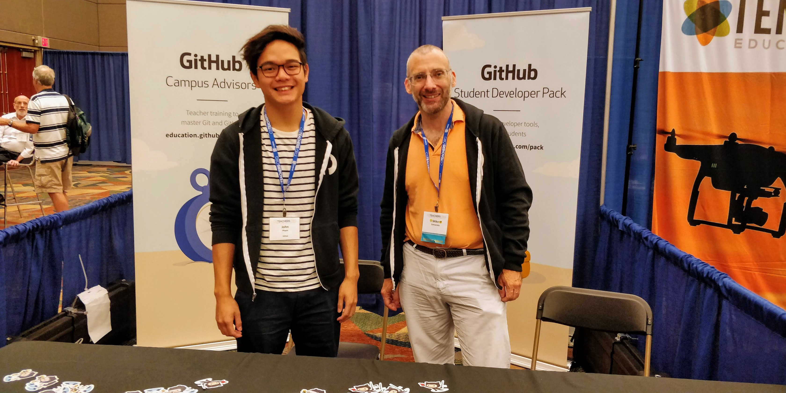

Csta 2018 Report
I just got back from the CSTA (Computer Science Teacher's Association) conference. It's the biggest annual conference dedicated to K12 CS education. I think there were about 700 people attending. It felt much larger than last year but compared to SIGCSE which is double the size, CSTA still felt pretty intimate.
The conference was in Omaha Devorah came along to play tourist and we both came a day early to do some site seeing.
First, we hit the zoo and Lauritzen Gardens. We've got the Bronx Zoo here in NY an the NY and Brooklyn Botanical Gardens which are all pretty impressive but even so, Omaha's zoo and gardens are well worth a visit. We then went over to the Durham Museum which was really terrific. Housed in an old railroad station, the museum has lots of great Omaha history as well as trains and other neat exhibits.
We also walked all over and did our best to pick up on the local flavor. One of our discoveries was a terrifically quirky retro/nostalgia/antiques store. It had an awesome working Pinball museum

along with all the rubber ducks you'd ever want for debugging

and a whole lot more.
By the river, we found both a statue and series of plaques honoring labor:

something I'm thinking a lot about now in light of the recent Janus decision.
As for the conference. It was 100% worth it.
I spent a lot of time at the GitHub booth with my new friend John talking about how I use GitHub with my classes.

and as always one of the highlights was spending time with old friends and making new friends while talking shop.
I also gave a talk on the state of CS teacher certification in New York State and what we're rolling out at Hunter. that led to discussions with people from all over. Texas, California, Indiana, and other places. We had some great discussions as to what's going on all over the country. I also had a chance to talk to teachers from all over NY State to let them know how Hunter can help them.
There were also interesting sessions. I attended a BOF facilitated by Todd Lash and others about mapping model lessons to CS standards. I'm actually not a fan of "the standards" and have some serious concerns about how standards are thrown around and used but it was a very interesting session nonetheless.
I also enjoyed a session by Owen Astrachan on teaching sorting. Owen gives a great talk. I didn't agree with some of how he approaches teaching sorting but then we teach different classes and students and could have slightly different goals leading to my view. In any case, it was very interesting and I plan on stealing the motivation he used. Owen started with a list of top hits - their titles and artist names and had us perform some mini data mining exercises on them in a spreadsheet to motivate the concept of sorting.
Probably the highlight of the conference for me was Michelle Friend's keynote. She had me as soon as she encouraged us to question the value of a lot of the education research out there. It got better when she reminded the audience of teachers that they were all education researchers. they perform their practice every day, analyze the results, and work to improve. So often, I hear education researchers dismiss teachers - "that's just anecdotal" they say while they publish the "true way" while ignoring the thousands of complex factors that actually affect education. There is some research that's great and some researchers I greatly respect but I've been forced to read enough bunk and there's been enough nonsense forced upon teachers over the years that just doesn't work in practice that a healthy dose of skepticism is critical.
Michelle also talked about assessment and how we test "what we can" rather than what we should.
It wasn't a talk from on high but I think it's what the audience needed - a talk from someone who's currently an academic but who at her core, I think is a teacher. It was teacher to teacher and that's what, at least in my opinion CSTA should be about.
A final highlight for me was when they awarded the Cutler Bell price for high school students. I knew that Benjamin Spector & Michael Truell were winners but I didn't realize they'd be at the conference to receive their award for their work creating Halite. I had helped them a bit along the way so knew the quality and impact of the project and it was great to see Ben and Mike recognized and to be there to be able to congratulate them in person.
Now it's back home and back to reality. The organizing committee really outdid themselves this year. Great job on CSTA 2018. I'm already looking forward to next year.